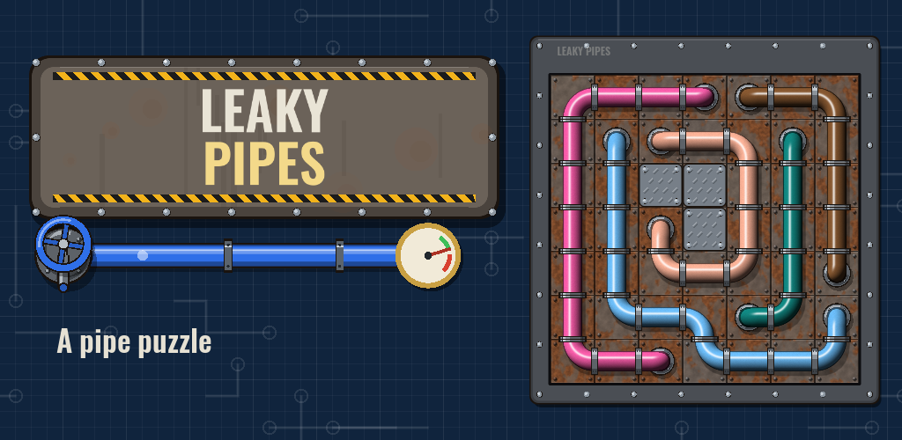
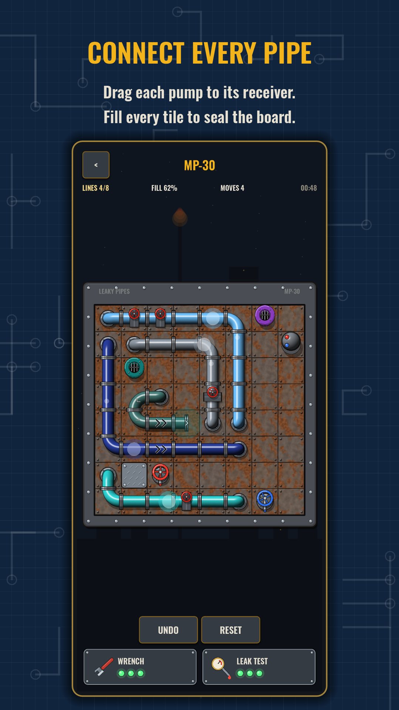
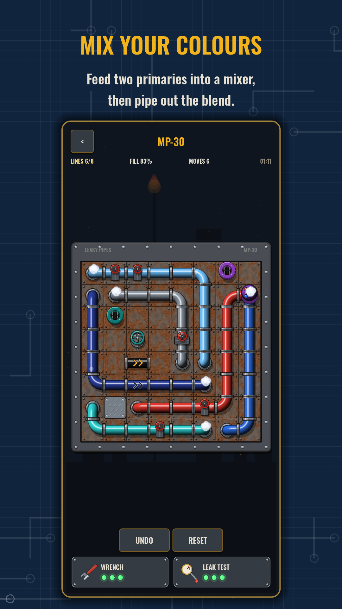
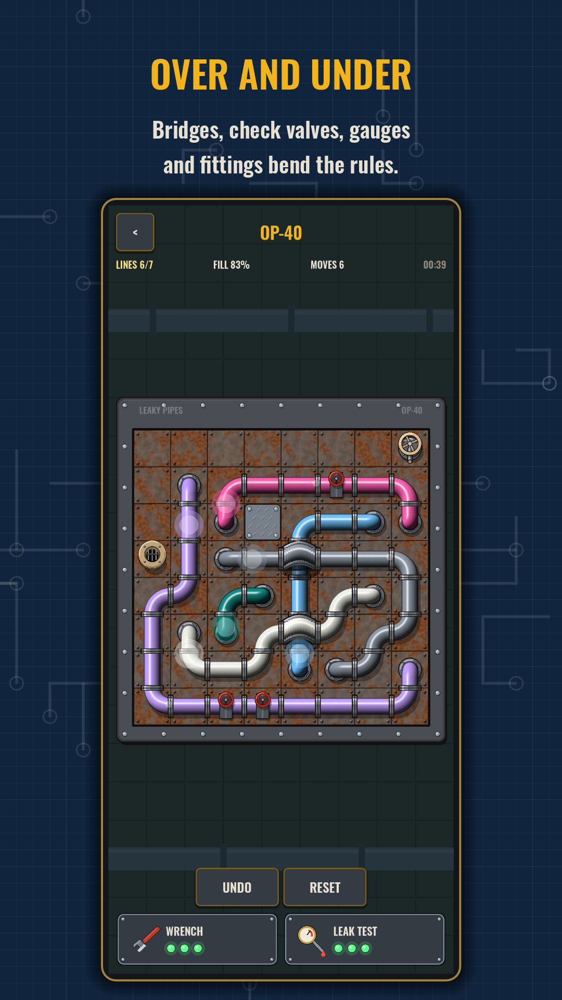
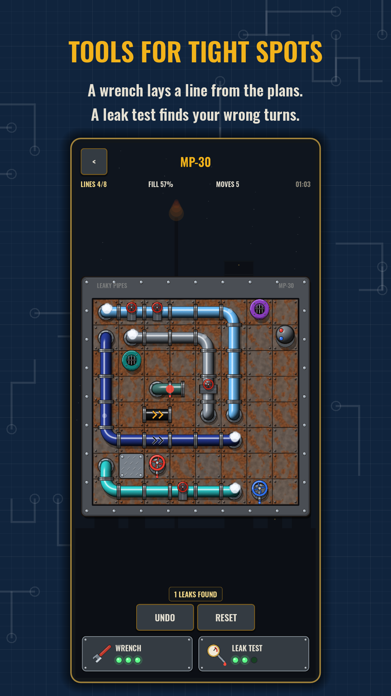
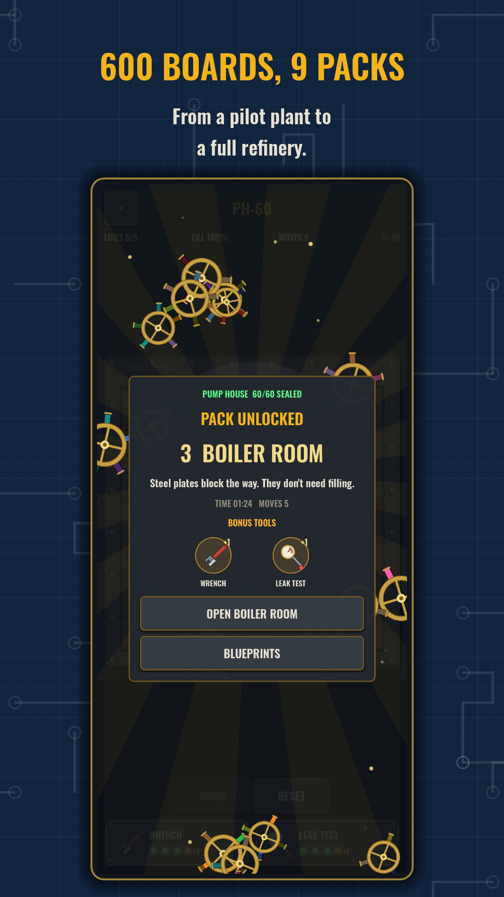
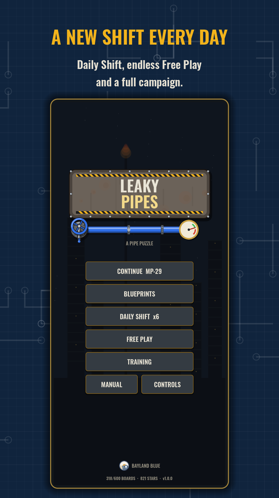

Leaky Pipes: Connect Puzzle

Every pump on the wall is leaking. Drag each coloured pump to the receiver of its colour, never crossing pipes, and fill every tile to stop the drips. Then the whole board pressurizes and seals.
If you love connect-the-dots line puzzles and colour flow games, this is that classic idea reimagined as a plumbing job, with bridges, check valves and colour mixers on top.






How it works
- Drag from a pump to the receiver of the same colour to lay a pipe. Touch any end and its partner pings.
- Pipes can't cross, and every tile must carry a pipe.
- Change your mind anytime: drag back, reroute from the middle, or cut through a pipe and back off to restore it. Undo and reset are free.
- Every board has exactly one solution, and connecting every pair always fills it.
New fittings arrive as you go. Steel plates block the way. Bridges carry one pipe over another. Check valves only let fluid flow one way. Mixers blend two primaries: red and blue make purple, blue and yellow make green, red and yellow make orange. Pressure gauges demand an exact PSI. Fittings force a straight run or a bend.
600 boards in nine packs
From a 5×5 pilot plant to a 10×10 refinery. Finish a pack to unlock the next, with a fanfare and bonus tools. Draw every line in one go for three stars.
| Pack | Boards | New fitting |
|---|---|---|
| Pilot Plant | 1–40 | Pipes |
| Pump House | 41–100 | Longer runs |
| Boiler Room | 101–160 | Steel plates |
| Overpass | 161–220 | Bridges |
| Check Station | 221–290 | Check valves |
| Mixing Plant | 291–360 | Mixers |
| Gauge Room | 361–430 | Pressure gauges |
| Fitting Shop | 431–500 | Straight and elbow fittings |
| Refinery | 501–600 | Everything |
Daily Shift, Free Play and Training
A new board every day, the same for every player, harder as the week goes on, so keep your streak going. Or play endless fresh boards in Free Play at Easy, Medium, Hard or Expert. Short Training lessons show each fitting with a ghost finger.
Tools for tight spots
The Wrench lays one line exactly as the plans say, and the Leak Test marks every joint that isn't on the plans. Tools recharge over time, and you can watch an optional ad to get one back sooner.
A living plant
- Open pumps drip down the wall into a puddle that slides when you tilt your phone and splashes when you shake it
- Fluid surges through sealed pipes, handwheels turn, mixers churn and steam hisses
- Colour symbols help colour-blind players tell every pipe apart
- Relaxed background music while you think
Ads
The game is free to play, with a banner ad and an occasional ad between boards. A one-time Remove Ads purchase in Controls removes them for good and makes tools recharge faster. Ads that give a tool back only play when you choose to watch one.
Support
Questions, feedback or bug reports: baylandblue@gmail.com